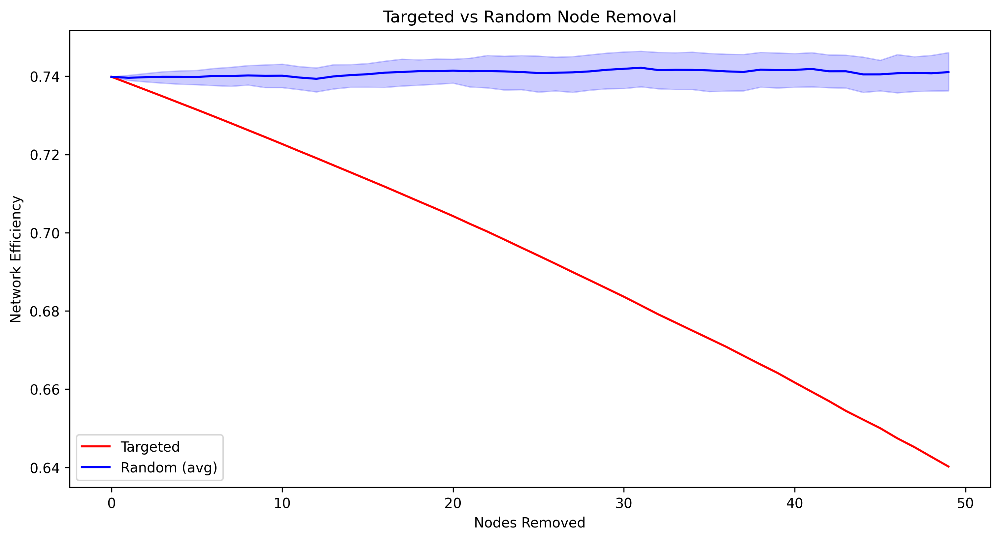

1. Network Overview
Network metrics file not found.
2. Node Importance Analysis
Top 10 Most Important Nodes
| Region | Betweenness Centrality |
|---|---|
| Primary visual area | 0.0009 |
| Secondary motor area | 0.0009 |
| Superior colliculus, motor related | 0.0008 |
| posteromedial visual area | 0.0008 |
| Prelimbic area | 0.0008 |
| Tuberomammillary nucleus, ventral part | 0.0008 |
| Anterior cingulate area, dorsal part | 0.0008 |
| Midbrain reticular nucleus | 0.0008 |
| Entorhinal area, lateral part | 0.0008 |
| Subiculum | 0.0008 |
3. Network Resilience Analysis
Network Degradation Summary
4. Expanded Node Removal Analysis
Regional Impact Distribution
Cascading Failure Analysis

Targeted vs Random Removal
5. Interactive Visualizations
The following interactive visualizations are available:
6. Key Findings
- Most critical region: Primary visual area
- Average impact of node removal: 0.00% efficiency change